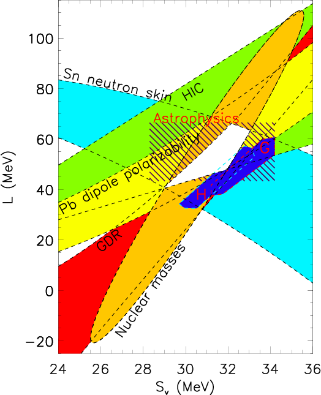
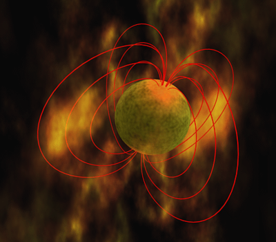
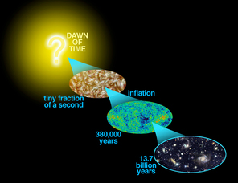
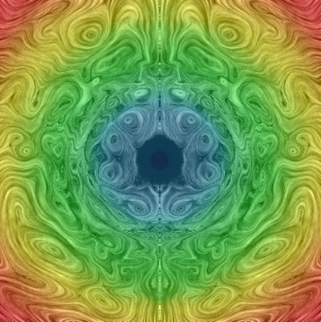
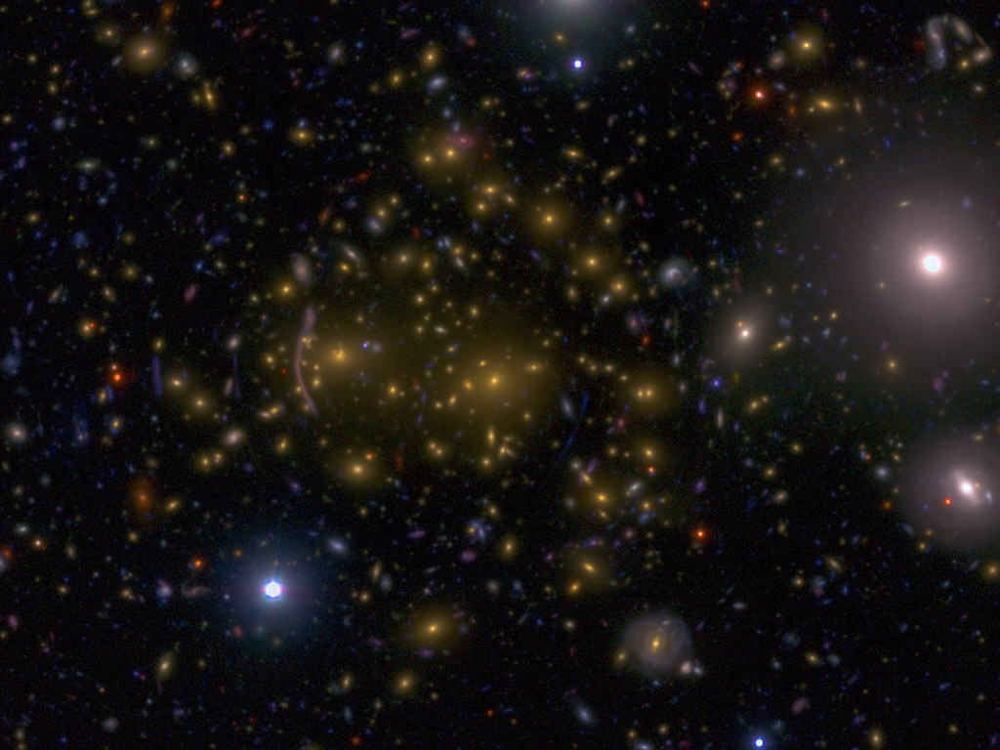
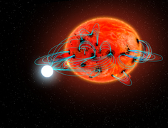
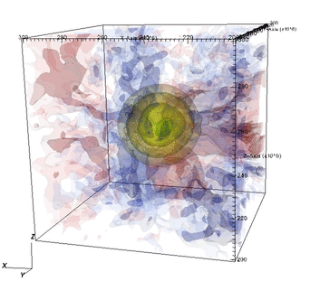

Individual Faculty Research Interests
-
Alan Calder

Alan Calder studies a variety of nuclear astrophysics problems as well as the basic physical processes involved in these problems. He has investigated core collapse supernovae and coalescing neutron stars, events thought to be sites of r-process nucleosynthesis, and problems involving thermonuclear explosions, classical novae and thermonuclear runaway (Type Ia) supernovae in particular. Calder is also interested in the challenging problem of radiation hydrodynamics, which has numerous applications in astrophysics. His research involves large-scale, multi-physics simulations of astrophysical events, and he is very interested in the validation of codes and simulations by comparing simulations to actual laboratory experiments. -
Jin Koda

The primary goal of Jin Koda's research is to understand the gas dynamical evolution of galactic disks, with an emphasis on star formation and interstellar medium (ISM) evolution. He employs both observational and theoretical approaches to explore gas structure, dynamics, and star formation over galactic disks. Jin Koda uses numerical hydrodynamic simulations and predicts the dramatic evolution of ISM structures in galactic dynamics (e.g. Wada & Koda 2004). The growth of such structures triggers star formation, controlling the formation and evolution of galactic disks. He also observes the evolutionary links among dynamics, ISM structures, and star formation. Recent and upcoming instruments are providing exciting opportunities in resolving ISM structures over global galactic disks. The figure shows an example -- a new image of molecular gas in the Whirlpool galaxy M51 observed with the Combined Array for Research in Millimeter Astronomy (CARMA) and Nobeyama 45m telescope (NRO45). This new map reveals the ISM evolution driven by galactic dynamics: strong shear motions on spiral arms pull apart massive molecular gas associations as they cross the spiral arms, producing filamentary/spur structures in interarm regions (Koda et al. 2009). He is now leading the CARMA & NRO45 survey of nearby galaxies to establish more general picture of ISM evolution and star formation in galaxies. He is also a member of the Herschel key science project (KINGFISH -- Key Insights on Nearby Galaxies: a Far-Infrared Survey with Herschel), which will unveil the immediate sites of star formation that are hidden deeply in the dense ISM. -
James Lattimer

Jim Lattimer studies the structure, composition, formation and evolution of neutron stars by working at the crossroads between nuclear theory and astrophysics. He also researches gravitational collapse supernovae, the mergers of neutron star-neutron star and neutron star-black hole binaries, and neutrino emission from proto-neutron stars. He is interested in the nuclear matter equation of state and the constraints that can be placed on it by laboratory nuclear measurements as well as by pulsar-timing observations and optical and X-ray studies of neutron stars. He has published, and continues to develop, tabulated equations of state that are frequently used throughout the world in large-scale computational simulations of supernovae and neutron star mergers.
This figure shows the experimentally constrained region of parameter space for symmetry energy coefficients, showing remarkable agreement with neutron matter theory and astrophysical measurements from neutron stars. The nuclear constraints come from nuclear binding energies, dipole polarizabilities, giant dipole resonance energies, and neutron skin thickenesses, and from the composition of fragments in heavy ion collisions. The astrophysical measurements come from neutron star X-ray bursts and from thermal radiation from of recently-accreting and now-cooling neutron stars in binary systems. -
Marilena Loverde

Marilena Loverde is a theoretical astrophysicist working in cosmology. Her primary interests are developing tools to use astrophysical datasets to learn about the fundamental physics of dark matter, dark energy, and inflation and to learn about the history and evolution of structure in the universe. She has worked extensively on weak gravitational lensing in galaxy surveys, primordial non-Gaussianity as a test of inflation, and massive neutrinos in cosmology (Image credit: Springel et al. 2005). -
Rosalba Perna

Rosalba Perna is a theorist with eclectic research interests, including gamma-ray bursts, neutron stars, gravitational lensing, accretion phenomenena, the growth of supermassive black holes, foregrounds for CMB experiments, axions, exoplanets.
In the last few years, her research has partly focused on using gamma-ray bursts as cosmological tools, to probe the physical conditions (i.e. metallicity, clumping, dust content) in high-redshift galaxies, and to put constraints on warm dark matter models for structure formation.
Another currently active line of research is in the area of the so-called 'magnetars', a class of neutron stars characterized by very strong magnetic fields, on the order of 1014-1015G. These are the most intense fields ever measured in the Universe. As the magnetic field evolves in the interior of these stars, magnetic stresses can occasionally become strong enough to break the crust, yielding 'starquakes', which trigger outbursts in gamma and X-rays. Rosalba's research aims at understanding, by means of simulations of the coupled thermal and magnetic field evolution within the neutron star crust, the role played by the magnetic field strength and topology on the observed phenomenology of these sources, and in particular on their temperature and timing evolution, and on their outburst statistics.
(image credit: NASA)
-
Neelima Sehgal

Neelima Sehgal's research focuses on using cosmological data to understand the nature of dark energy and dark matter, the properties of neutrinos, and the physics of the early Universe, including inflation. This is done primarily using measurements of the Cosmic Microwave Background (CMB), and Stony Brook is actively involved in the ACTPol Collaboration, which measures the CMB from a ground-based telescope in the Atacama Desert in Chile. Neelima's group is primary interested in exploiting the gravitational lensing signal in the CMB to measure the mass of neutrinos, and in measuring the polarization signal in the CMB to look for signatures of inflation.
(image credit: NASA/WMAP) -
Michal Simon

Mike Simon is interested in the formation of stars, brown dwarfs, and planets, and more specifically in the processes and circumstances that govern the formation of binaries and higher order multiples. At present, he is most involved in using dynamical methods to measure the masses of young stars to measure the masses of very young stars with high precision. The goal of this work is to calibrate calculations of pre-main sequence evolution and thus to improve the accuracy of mass and age estimates of young stars from their location in the HR diagram. Increasingly, this work is leading to similar studies of brown dwarfs. His research uses state-of-the-art instrumentation in several areas of astronomy (e.g. IR spectroscopy, adaptive optics imaging, and interferometry at Gemini and Keck Observatories, mm-wave interferometry at IRAM and ALMA). This research is almost always collaborative and offers students the opportunity to work with instruments at the forefront of modern astronomy and with scientists who are expert in their use. -
Douglas Swesty

Doug Swesty is interested in a variety of nuclear astrophysical and radiation-hydrodynamic phenomena. He is working on neutrino radiation-hydrodynamic models of stellar core-collapse and type II supernova explosions. This work utilizes large-scale parallel computers to carry out high-resolution models of the neutrino-radiating fluid that is present in proto-neutron stars formed at the endpoint of the collapse of a massive stellar core.
His research also focuses on the role of the equation of state of hot, dense matter in facilitating the supernova explosion associated with the stellar core collapse. Swesty also actively works with colleagues at national laboratories, such as Lawrence Livermore National Laboratory, on the development of new radiation transport and radiation-hydrodynamic algorithms and codes. This includes the development of verification tests as well as validation testing strategies using data from high energy density laboratory experiments. -
Anja von der Linden

Anja von der Linden uses observations of galaxy clusters, the largest gravitationally bound objects in the Universe, to help answer fundamental questions about our Universe: What is it made of? What are dark matter and dark energy? How do galaxies evolve? She specializes in using weak gravitational lensing to accurately calibrate cluster mass measurements, a crucial step in using clusters as cosmological probes. Her Weighing the Giants project enabled the highest precision cosmology constraints from clusters to-date, including some of the tightest constraints on the nature of dark energy from a single probe. She continues this work within the LSST Dark Energy Science Collaboration, where she is currently co-convener of the Clusters working group, and a member of the Collaboration Council. von der Linden is also interested in the physics of galaxy clusters, such as the dynamics of merging clusters, as well as the properties and evolution of cluster galaxies. -
Fred Walter

Fred Walter has eclectic interests in galactic astronomy. His main interests are in star formation in the Galaxy, stellar coronae and chromospheres, and compact objects. The overarching theme to his present research is the astrophysics of accretion, from star formation (T Tauri stars), to white dwarfs (polars and novae). He is a multiwavelength observer, working in X-rays (Chandra and XMM), UV (FUSE), optical (HST; SMARTS) and the near-IR (IRTF). Current projects include: Accretion and activity in the T Tauri stars S CrA and RU Lupi, The eruptive pre-main sequence stars (EXORs) V1118 Ori and V1647 Ori, Spectrophotometry of recent novae, including YY Dor and N LMC 2005, Coronal structure in rapidly rotating stars: XY UMa and V471 Tau, Star formation in OB associations, concentrating on the low mass stars and brown dwarfs in the Orion OB1 association, properties of isolated neutron stars, activity cycles in magnetic cataclysmic variables (POLARS) (image credit: Stella Kafka/CTIO) -
Michael Zingale

Mike Zingale is interested in computational and nuclear astrophysics, in particular the development of computational methods appropriate to modeling Type Ia supernovae, Type I X-ray bursts, and Classical novae. Type Ia supernovae are the largest thermonuclear explosions in the Universe. The physical processes leading up to the explosion involve a wide range of length and timescales, making these events extremely challenging to simulate. Working with colleagues at LBL, Zingale has developed a low Mach number hydrodynamic code, Maestro, appropriate to the conditions in these explosions. Maestro filters soundwaves from the system, allowing for the efficient simulation of long timescale processes, such as astrophysical convection. This method was recently used to model the final hours of 'smoldering' preceding the explosion of a Type Ia supernovae. This type of calculation is critical to determining the distribution of the initial flames for the subsequent explosion. Current applications include the convection in sub-Chandra models of SNe Ia and X-ray bursts. Maestro is freely available for use.
Together with other members of the nuclear astrophysics group, Zingale is also interested in verification and validation of astrophysical hydrodynamics and radiation hydrodynamics codes.